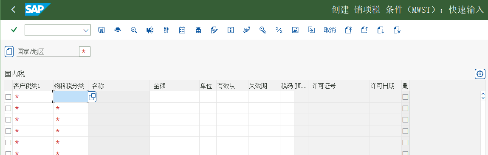

マスタ：得意先、品目、価格
得意先マスタの 3 層 · 4 つのパートナ役割 · 品目の販売ビュー · 条件レコード · 実機画面
1. 3 種類のマスタの役割分担
| マスタ | 答え | 階層 | 作成する T-code |
|---|---|---|---|
| 得意先マスタ | 誰に売るか：誰が発注するか、どこへ納入するか、誰に請求するか、誰が支払うか。さらに販売エリア、支払条件、税分類なども導出されます | 一般データ / 会社コードデータ / 販売エリアデータ（3 層） | VD01（登録、販売ビュー）、VD02（変更）、XD01/BP（S/4HANA の得意先マスタ） |
| 品目マスタ | 何を売るか：販売可否、販売単位、税分類、勘定割当グループ、輸送条件 | 一般 / プラント / 購買 / 販売（販売エリアレベル）などのビュー | MM01（登録）、MM02（変更）、MM03（照会） |
| 条件レコード | いくらか：単価、割引、運賃、売上税 | 販売エリア / 得意先 / 品目などのキー組合せ別 | VK11（登録）、VK12（変更）、VK13（照会） |
なぜ得意先マスタに「3 層」があるのか1 つの会社が複数の会社コードと複数の販売エリアに対応することがあるためです：得意先の一般情報（名称、住所、税番号）は全社で共用します。会社コード層には支払条件、照合勘定などの財務情報を置きます。販売エリア層には販売関連データ（販売エリア、得意先計算スキーマ、輸送条件、パートナ役割など）。そのため「同じ得意先」でも販売エリアが違えば異なる設定を持てます。
2. 得意先マスタ
| 階層 / タブ | 何を入れるか | 何に影響するか |
|---|---|---|
| 一般データ（General） | 名称、住所、税番号、担当者、連絡手段 | 全社で共用。住所は請求/納入の既定の送付先情報にもなります |
| 会社コードデータ（Company Code） | 照合勘定、支払条件、督促、利息 | 請求書の転記時の貸方の売掛金勘定、支払条件 |
| 販売エリアデータ（Sales Area） | 販売エリア、得意先計算スキーマ、輸送条件、得意先グループ、税分類、勘定割当グループ、パートナ役割 | 価格、税、出荷方式、収益勘定を決定 |
IMG パス（得意先勘定グループの販売データ / 画面レイアウトの登録）財務会計（新）→ 債権管理および債務管理 → 得意先勘定 → マスタデータ → 得意先マスタレコード登録の準備 → 画面レイアウト付きの勘定グループの定義（得意先）
原教材の中国語パス
财务会计(新) → 应收账款和应付账款 → 客户账户 → 主数据 → 创建客户主记录准备 → 定义带有屏幕格式的账户组（客户）教材の最初のステップでは「得意先勘定グループ」を設定します：これは販売ビューでどの項目が必須で、どれが見えて、どれが任意かを決定します。これは「得意先マスタ画面がどのような見た目か」の切り替えです。コースのシナリオでは勘定グループ K001「受注先-颐宁」 を使います。

IMG パス（得意先の販売ビューの登録）ロジスティクス → 販売管理 → マスタデータ → パートナ → 得意先 → 登録 → VD01
原教材の中国語パス
后勤 → 销售和分销 → 主数据 → 业务伙伴 → 客户 → 创建 → VD01

コースシナリオ（教材環境）の実際の値
| 対象 | 値 | 出典（画面） |
|---|---|---|
| 得意先（受注先） | 10000000 远东造船厂 / 大连 | VD01 の画面（画面 3） |
| 出荷先 | 10000000 远东造船厂 第三支社 | VD02 初期画面 |
| 得意先勘定グループ | K001 受注先-颐宁 | 勘定グループの登録画面（画面 1） |
| 得意先販売ビュー（出荷） | 輸送条件 99、納入プラント P999、納入優先度 02、「受注の組合せ」にチェックを入れる | VD01 販売ビュー（画面 3） |
| 品目 | F999-100 铸钢泵 170-230（品目タイプ FERT 完成品、業界分野 M 機械工学） | MM01 の画面（画面 6） |
| 販売価格（PR00） | 8,000.00 RMB／PC、有効期間 2021.01.01 – 9999.04.14 | VK11 の画面（画面 8） |
これらの値の使い方授業では受講者に自分のシステムで「同じ種類のデータがどうなっているか」を照会させ、
C999 / F999-100 を暗記させませんこれらは練習用のコードです。スクリーンショットの数値は教材環境の実際の値で、項目の位置と相互関係を照合するためのものです。3. 4 つのパートナ役割（Partner Roles）
1 枚の受注伝票には 4 つの「役割」があり、同じ得意先のことも、別会社のこともあります：
| 役割 | コード | 意味 | 教材のシナリオ |
|---|---|---|---|
| 受注先 Sold-to Party | AG | 発注した人（受注伝票の「得意先」項目） | 远东造船厂（極東造船所） |
| 出荷先 Ship-to Party | WE | 商品を受け取る人/場所（納入はここに届く） | 远东造船厂第三分公司（極東造船所第三支社） |
| 請求書送付先 Bill-to Party | RE | 請求書を誰に発行するか | 通常は受注先と同じ |
| 支払先 Payer | RG | 誰が支払うか（売掛金を決定） | 教材の請求画面の支払先 10000000 |
役割コードの見方システムによってパートナ役割のコードは異なることがあります（教材では SH が納入先/出荷先を表し、標準設定では WE / SH の混用がよく見られます）。「出荷」ビューか「納入」ビューかで異なります）。自システムの F4 の入力候補を基準にしてください。
IMG パス（出荷先を受注先に割当）ロジスティクス → 販売管理 → マスタデータ → 取引パートナ → 得意先 → 変更 → VD02
原教材の中国語パス
后勤 → 销售和分销 → 主数据 → 业务合作伙伴 → 客户 → 更改 → VD02

4. 品目マスタ（販売ビュー）
品目マスタで SD に関係する項目は主に販売ビュー（販売組織 / 流通チャネルレベル）とプラントレベルにあります。コースシナリオでは 2 つの品目を外販します：完成品「铸钢泵 170-230」と取引商品「高速增压涡轮泵」。
| 項目 | 役割 | 影響する先 |
|---|---|---|
| 販売単位 / 基本単位 | 得意先に販売する際の数量単位 | 受注数量と価格単位 |
| 品目グループ / 製品階層 | 統計と分類 | レポート分析 |
| 明細カテゴリグループ Item Category Group | 受注明細の明細カテゴリを決定（価格設定の有無、納入の有無、請求の有無） | 受注明細の動作 |
| 税分類 Tax Classification | 得意先の税分類との組み合わせ → 税コード（売上税）を決定 | 税額 |
| 勘定割当グループ Account Assignment Group | 得意先の勘定割当グループ + 勘定キーとともに収益勘定を決定 | 会計伝票 |
| 輸送条件 / 積込グループ | 得意先の輸送条件・プラントとともに出荷ポイントと積込ポイントを決定 | どこから出荷するか |
| 販売ステータス / 品目統計グループ | 販売できるか。販売分析に入るか | VA01 でその品目を呼び出せるか；MCTA にデータがあるか |
IMG パス（品目マスタの販売ビューの登録）ロジスティクス → 品目管理 → 品目マスタ → 品目 → 登録（一般） → MM01 即時
原教材の中国語パス
后勤 → 物料管理 → 物料主记录 → 物料 → 创建（一般） → MM01 立即
5. 条件レコード：価格はどこに持つのか
価格は品目マスタではなく、条件レコードに入っています：条件タイプごとに（例えば PR00 販売価格、MWST 売上税）を登録します。キーの組み合わせは通常「販売組織 + 流通チャネル + 品目」です。PR00 のアクセス順序が「どの価格を先に探すか」を決定します。
IMG パス（品目の販売価格の登録）ロジスティクス → 販売管理 → マスタデータ → 条件 → 条件タイプ別選択 → VK11 → 登録
原教材の中国語パス
后勤 → 销售和分销 → 主数据 → 条件 → 按条件类型选择 → VK11 → 创建

{kind=link}

よくある 3 つの質問
- 受注伝票の価格が空/0：条件レコードが未登録、または条件レコードのキーが受注伝票の販売エリア/得意先と一致していない、または条件レコードが期限切れです。
- 価格を変更しても既存の受注伝票は変わらない：伝票にはその時点の価格スナップショットが保存されています；手動で再価格設定が必要です。
- 特定の得意先専用の価格を作りたい：得意先を含む条件テーブルで得意先専用の条件レコードを登録し、そのアクセス順序を一般価格より前に置きます。
6. マスタ関連タスクの索引（教材）
| タスク | タイトル | 教材 IMG / メニューパス | T-code | 画面の数 |
|---|---|---|---|---|
| タスク 21 | 得意先勘定グループの販売データを登録 | 財務会計（新）→ 債権管理および債務管理 → 得意先勘定 → マスタデータ → 得意先マスタレコード登録の準備 → 画面レイアウト付きの勘定グループの定義（得意先） | — | 16 |
| タスク 34 | 品目マスタの販売ビューを登録 | ロジスティクス → 品目管理 → 品目マスタ → 品目 → 登録（一般） → MM01 即時 | MM01 | 10 |
| タスク 35 | 品目の販売価格を登録 | ロジスティクス → 販売管理 → マスタデータ → 条件 → 条件タイプ別選択 → VK11 → 登録 | VK11 | 5 |
| タスク 36 | 売上税率の登録 | ロジスティクス → 販売管理 → マスタデータ → 条件 → 条件タイプ別選択 → VK11 → 登録 | VK11 | 4 |
| タスク 37 | 受注先マスタの販売ビューを登録 | ロジスティクス → 販売管理 → マスタデータ → パートナ → 得意先 → 登録 → VD01 | VD01 | 13 |
| タスク 38 | 出荷先の販売ビューを登録 | ロジスティクス → 販売管理 → マスタデータ → 取引パートナ → 得意先 → 登録 VD01 | VD01 | 6 |
| タスク 39 | 出荷先の受注先への割当 | ロジスティクス → 販売管理 → マスタデータ → 取引パートナ → 得意先 → 変更 → VD02 | VD02 | 4 |
7. セルフチェック
| 確認すべきこと | どう確認するか |
|---|---|
| 得意先が特定の販売エリアに販売ビューを持つかどうか | VD03 / XD03 で得意先と販売エリアを入力；テーブル KNVV |
| 品目に販売ビューがあるか | MM03 → 追加 → 販売組織データ；テーブル MVKE |
| 価格はどこから来るのか | VA03 → 明細 → 条件タブで、各行の条件タイプとソース（アクセス順序の何番目で見つかったか）を確認 |
| 税額がなぜこの数値なのか | VA03 の明細条件で MWST の行を見て、得意先/品目の税分類（カスタマイジング）と照合する |